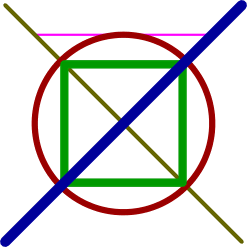
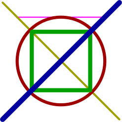

In Metapost (or rather in Metafun) one can define arrays of colors, strings, paths, pens and other variables. An example is the following:
-
\starttext \startMPpage string MyColors[] ; path MyPaths [] ; pen MyPens[] ; for j = -1 step 1 until 3 : MyPens[j] := pencircle scaled ((2+j)*pt) ; endfor MyPaths[-1] := (-1.5cm,1.5cm) -- (1.5cm,1.5cm) ; MyColors[-1]:= "magenta" ; MyPaths[0] := (-2cm,2cm) -- (2*cos(0)*cm,-2cm) ; MyColors[0] := "darkyellow" ; MyPaths[1] := fullcircle scaled 3cm ; MyColors[1] := "darkred" ; MyPaths[2] := fullsquare scaled 2cm ; MyColors[2] := "darkgreen" ; MyPaths[3] := (-2cm,-2cm) -- (2cm,2cm) ; MyColors[3] := "darkblue" ; for j = -1 step 1 until 3 : draw MyPaths[j] withpen MyPens[j] withcolor MyColors[j] ; endfor \stopMPpage \stoptext
- 
In the above example, instead of
string MyColors[] ;
one could have said
color MyColors[] ;
and then we should have defined each component of MyColors as colors instead of strings:
-
\starttext \startMPpage color MyColors[] ; path MyPaths [] ; pen MyPens[] ; for j = -1 step 1 until 3 : MyPens[j] := pencircle scaled ((2+j)*pt) ; endfor MyPaths[-1] := (-1.5cm,1.5cm) -- (1.5cm,1.5cm) ; MyColors[-1]:= magenta ; MyPaths[0] := (-2cm,2cm) -- (2*cos(0)*cm,-2cm) ; MyColors[0] := darkyellow ; MyPaths[1] := fullcircle scaled 3cm ; MyColors[1] := darkred ; MyPaths[2] := fullsquare scaled 2cm ; MyColors[2] := darkgreen ; MyPaths[3] := (-2cm,-2cm) -- (2cm,2cm) ; MyColors[3] := darkblue ; for j = -1 step 1 until 3 : draw MyPaths[j] withpen MyPens[j] withcolor MyColors[j] ; endfor \stopMPpage \stoptext
- 
Also note that in order to specify the size of the pen in MyPens[j] we have to say ((2+j)*pt) in order for Metapost to interpret correctly the desired size of the pen. The outer parentheses are to prevent MetaPost from interpreting the definition as
MyPens[j] := (pencircle scaled (2+j)) * pt ;
which would result in an error.